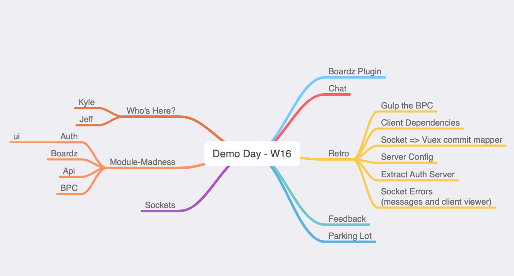

The first demo day for the Boardz.app system.
Jeff & Kyle
The system is being built towards a component based architecture. This means the goals is to build the smallest possible unique feature into an independent component that can be used inside other modules.
Everything is written in TypeScript using Jest for unit testing
Currently the Boardz.app system has the following modules:
The architecture stabilized this week so no more slacking on tests. The BPC process encourages unit tests so that should help.
Goal: Code Coverage metrics
Still having issues with the Client app BPC process. Work out the issues and bake it into Gulp.
Manual steps should move into Gulp Tasks. Package level to start. It can run unit tests and then when they pass package the module and copy it.
Goal: Build out basic Gulp flow
Everything inside of configureListeners can be abstracted to just work based on the Vuex store MutationTree.
Goal: Eliminate Socket.io config code inside the modules
Currently it's in the boardz. Move it to it's own folder. Then move them all out to modules.
Goal: Move it!
Decide how to handle client side errors for now. Ideally use something to give devtools in all browsers and include xhr, sockets, and JS errors.
Goal: Look into options and cleanup existing console logging